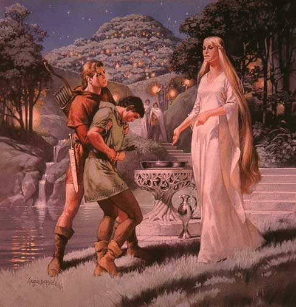
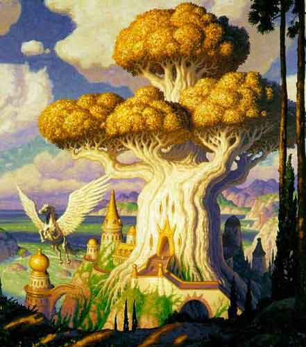
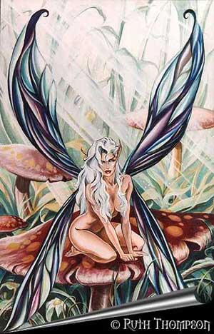
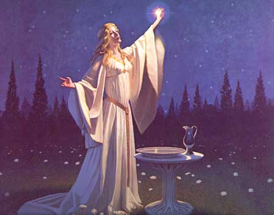

Notizie
Generali
Fondamentalmente è l’unica dea adorata dagli elfi di Arelia (tranne gli elfi scuri e i marini). E’ la dea che simboleggia la felicità e l’armonia della natura rigogliosa e fertile. Una natura così gioiosa non può convivere il male e l’ingiustizia sostanziale, quindi è una dea buona che protegge tutti coloro possono essere puri di spirito e abbiano buone intenzioni, inoltre è la dea della natura immacolata e della vegetazione, per cui predilige che gli esseri che si nutrano dei cibi che spontaneamente le foreste donano loro più che favorire fenomeni di coltivazione artificiale. E’ infine la dea degli animali e della fauna in generale, incita al rispetto che le specie più intelligenti devono avere nei confronti di quelle inferiori che sono comunque essenziali per la loro esistenza.

Descrizioni
raffiguranti la divinità
La dea assume le sembianze di una bellissima e giovane donna di razza elfica, non altissima ma dalla pelle chiarissima e morbida come la buccia di una pesca, dalle forme non eccessive ma ugualmente dalle curve sinuose e accattivanti. La dea ha una folta chioma verde scuro. Il suo corpo armonico in tutte le dimensioni è coperto da un velo di seta elfica azzurro trasparente. Spesso ha nella mano destra un ramoscello dell’albero della vita dalle caratteristiche foglie color porpora.
Semi-dei
SEMI-DEI : E' conosciuta sola di queste potenti creature: WOODRION che secondo la leggenda incarna il primo elfo che nacque sull’altipiano e che una volta arrivato ad un’anzianità tale da permettergli di raggiungere il paradiso elfico decise di rimanere su Arelia sotto forma di un gigantesco ed immortale albero. E' quindi il semi-dio protettore delle foreste, degli alberi e dei treant, inoltre è venerato dai druidi. Si narra che il luogo ove si trova Woodrion (da qualche parte in una remota zona della foresta elfica) sia incantato e corrisponda al Grande Oracolo dei Druidi.

Minori
ESSERI
PROTETTORI :
Sono
esseri protettori di determinate foreste ed ecosistemi di Arelia. Sono dunque
una moltitudine ed ogni piccola comunità elfica ne ha uno con la sua leggenda
particolare.
CREATURE VIVENTI : Sono creature speciali che sebbene vivano sulla terra hanno un contatto diretto e migliore con Arlinir. Fra queste possono ricordarsi le ninfe, i treant, i satiri e le altre magiche creature dei boschi.

Compiti dei chierici e dei fedeli
Prendersi cura delle comunità elfiche, del loro ecosistema e difendere la natura ad esse circostante. Dare la vita ed aiutare nel parto le donne elfiche, aiutare ad allevare i piccoli elfi. Considerare i mezzi elfi come gli elfi. Combattere la distruzione, il male e la pigrizia che porti alla rovina. Essere punto di riferimento come assistenza nella comunità. Vivere in armonia con il proprio spirito con quello degli altri e con la natura che li circonda.
Organizzazione del Culto su Arelia
Gli elfi vivono in comunità, ogni singola comunità deve avere il proprio tempio elfico dove vi sono i chierici sempre a disposizione.
I
chierici di Arlinir hanno una gerarchia molto semplice è divisa fra:
Foglia
d'oro di Arlinir: Coloro
che sono iniziati al culto e sono più inesperti e giovani. Possono anche essere
a capo del culto di una piccola comunità. Svolgono di solito il lavoro più
gravoso di assistenza alla comunità fornendo cure gratuite a tutti i fedeli. Portano una veste il cui colore dominante deve essere il
verde chiaro.
Alto Sacerdote
di Arlinir:
Comanda un tempio di una comunità ed essendo più esperto comanda i chierici più
giovani e conduce alla fede gli iniziati della comunità, istruendoli secondo i
dettami del culto. Si diviene, di diritto, Alto Sacerdote quando si raggiunge il
quinto livello di esperienza. Fra tutti gli Alti Sacerdoti i più alti di
livello (ed a parità i più anziani di età) guidano le rispettive comunità
(ossia un tempio consacrato alla dea). Portano una veste il cui colore dominante deve essere il verde
scuro.
Sommo Sacerdote
di Arlinir: Venerati e potenti chierici di Arlinir, rappresentano una figura egemone della religione.
Divengono di diritto Sommi Sacerdoti i nove più esperti Alti Sacerdoti (ed
a parità i più anziani di età).
Costoro oltre ad avere l'onere e l'onore di gestire le nove più importanti sedi
del culto di Arlinir, fanno parte del Sommo
Concilio Elfico. Portano una veste il cui colore dominante deve essere il
porpora dell’albero della vita.
Sommo
Concilio Elfico: Riunione quinquennale a cui devono partecipare tutti i Sommi Sacerdoti di Arlinir.
E' tenuto presso una comunità elfica ed essendo molto prestigioso avvengono
delle vere e proprie gare fra le varie sedi candidate. La scelta della sede
successiva è l'ultimo atto di ogni Sommo Concilio Elfico.
La prima di queste (che si svolge nei primi 15 giorni) è rappresentata dalla nomina dei nuovi chierici. Ogni comunità può inviare, infatti, fino a tre nuovi iniziati al culto (questo limite può essere modificato dallo stesso Sommo Concilio in caso di bisogno) dinanzi al Concilio, costoro saranno accompagnati dal loro Alto Sacerdote il quale relazionerà singolarmente per ogni suo candidato dinanzi al concilio. I Sommi Sacerdoti potranno effettuare un esame del candidato rivolgendogli varie domande o utilizzando altri strumenti ritenuti opportuni.
Il quindicesimo giorno, in una celebrazione solenne, il Sommo Concilio nomina con decisione effettuata a maggioranza i nuovi giovani chierici (si tratta di una nomina sostanziale, ossia costoro diventeranno chierici di primo livello solo dopo questa iniziazione). Al termine di questa celebrazione le nuove Foglie d'Oro e i loro accompagnatori lasceranno la sede del Sommo Concilio.
Si noti che nel caso eccezionale in cui, per ogni motivo, sia non possibile nominare nuove Foglie d'oro durante il Sommo Concilio, anche un singolo Alto Sacerdote può nominare nuovi chierici i quali dovranno al più presto essere da lui presentati, non riconfermati, dinanzi al Sommo Concilio nel quale saranno anche esposti i motivi di necessità che hanno portato alla loro nomina atipica.
Esaurite le nomine ricevono in udienza le più alte cariche politiche e personalità che durante il quinquennio abbiano chiesto di incontrare il Concilio e siano stati accettati. In ogni caso riceveranno la visita della Famiglia Reale Erlin, i rappresentanti dei clan dominanti del Territorio Libero Loderin, la Congregazione dei Druidi, i rappresentanti delle quattro scuole di magie elfica.
Nel restante periodo del Concilio i Sommi Sacerdoti discutono di tutte le questioni religiose e pratiche riguardanti il culto della dea, prendendo nel caso decisioni vincolanti per tutti i fedeli a maggioranza assoluta.
Fra le varie decisioni deve notarsi che solo il Sommo Concilio può stabilire punizioni per i chierici che abbiano infranto i dettami della fede e siano stati accusati formalmente da almeno un Alto Sacerdote. Inoltre, dopo aver verificato (al tempo dell'inizio del Sommo Concilio) quali tra gli Alti Sacerdoti abbiano diritto a gestire le comunità elfiche poste sotto il controllo Sommo Concilio, determinano le sedi di competenza di ognuno di loro. Si tenga presente che quindi, una volta nominato per una sede, il chierico resta in carica per almeno un quinquennio. I chierici che hanno diritto alla nomina hanno l'onere di comunicare prima dell'inizio del Concilio le loro preferenze e la loro disponibilità generica a gestire una comunità. In ogni caso la scelta è effettuata ad insindacabile giudizio del Sommo Concilio. In caso in cui venga meno durante il quinquennio un Alto Sacerdote il tempio sarà gestito fino al prossimo concilio dal Sommo Sacerdote territorialmente più vicino. Decidono l'eventuale fondazione di nuovi templi e comunità.
Nella riunione le decisioni si prendono a maggioranza. Al termine del concilio, negli ultimi 10 giorni, avviene la scelta della sede del prossimo fra le comunità che si sono candidate ad accettarlo. Queste inviano i loro delegati che illustreranno l'organizzazione prevista per questo evento. Non può scegliersi la stessa sede nelle successive seconde riunioni del Concilio.
Il concilio termina con una solenne cerimonia alla quale partecipano tutti i Sommi Sacerdoti. La Cerimonia dura un'intera giornata e termina solo la sera al momento di flusso dell'energia divina di Arlinir durante il quale i Sommi Sacerdoti lanceranno congiuntamente un potente incantesimo (Il Velo Sacro di Arlinir, incantesimo speciale del 5° livello di potere, con componente materiale di 1000 g.p. per Sommo Sacerdote). Tutti coloro partecipano all'intera cerimonia e sono presenti al momento del lancio dell'incantesimo hanno una % pari al triplo del punteggio di carisma di ricevere in dono dalla dea un punto divino bonus.
In caso di estrema necessità ed urgenza, 1/3 dei membri del Sommo Concilio oppure il Re Erlin oppure la maggioranza dei Clan del Territorio Libero Loderin possono richiedere la convocazione straordinaria del Concilio per risolvere una o più determinate questioni. Si tratta di Concilio atipico che ha durata variabile a seconda delle esigenze e non prevede cerimonie particolari.
Custode della Foglia d'Oro: E' una nuova classe di personaggi considerata come facente parte dei ministri del culto di Arlinir.

Doveri e Retribuzione del Chierico
Le
Foglie d'Oro e tutti gli altri chierici che non gestiscono una comunità sono
tenuti a prestare servizio presso un tempio scelto dal Sommo Sacerdote che a
turno a per il quinquennio ha il compito di distribuire i chierici fra i vari
templi. Tutti i chierici possono fare istanza a costui per ottenere un
trasferimento. Il periodo minimo previsto per tali mansioni è di 2 mesi l'anno (che possono distribuire come meglio credono nel corse dell'anno). Per
tale attività ricevono una paga annuale commisurata al loro livello di esperienza,
tale
| Livello di esperiena | Paga annuale per i primi due mesi | Supplemento per ogni mese ulteriore |
| 1° - 2° | 60 querce / 50 corone | +40
querce |
| 3° - 4° | 90 querce / 75 corone | +60
querce |
| 5° - 6° | 200 querce / 170 corone | +120
querce |
| 7° - 8° | 350 querce / 300 corone | +200
querce |
| 9° - 10° | 800 querce / 690 corone | +500
querce |
| 11° - 12° | 1200 querce / 1000 corone | +800
querce |
| 13° o + | 1600 querce / 1350 corone | +1000
querce |
Gli
I Sommi Sacerdoti ottengono un bonus del 50% ma devono
Si noti
che
i chierici non sono in alcun caso soggetti al
pagamento del 10% al culto ed il loro salario è anche esente dalle tasse del
Si noti che un chierico in viaggio trova sempre accoglienza (vitto e alloggio compreso) presso ogni tempio di Arlinir, indipendentemente dalla locazione del tempio presso il quale sono stati assegnati. Per ogni giorni in cui costoro beneficiano di tale ospitalità, però, vi è una possibilità pari al 10% che sia richiesto dall'Alto Sacerdote del Tempio (o chi ne fa le veci) di prestare la propria opera in favore del tempio locale l'intera giornata successiva (se impossibilitati, dovranno prestarla appena ne avranno la possibilità). Adempiere a tale dovere è considerato necessario ed, in ogni caso, i giorni di lavoro prestati in questo modo possono essere considerati ai fini dei giorni di lavoro che annualmente i chierici devono prestare per il Tempio. Si noti che i Sommi Sacerdoti sono esonerati da tale dovere.
I Fedeli di Arlinir ed il costo degli incantesimi
Coloro vogliono divenire fedeli di Arlinir devono fare richiesta e ricevere la Foglia d'Argento della divinità da un Alto Sacerdote che sia convinto della loro fede, in una piccola cerimonia (a partire dalla maturità). Da tale momento in poi verseranno un contributo pari al 10% delle loro entrate lorde. In compenso potranno ricevere incantesimi clericali a richiesta senza il pagamento di ulteriore somma di denaro (in ogni caso devono essere pagati i componenti materiali). Ogni volta che ricevono tali magie miracolose dovranno spendere dei giorni (intesi come giorni di lavoro) presso un qualunque tempio in preghiera per la Dea. Si noti che possono gestire tali giorni liberamente considerando che devono esaurirli entro la fine dell'anno successivo a quello in corso.
Per verificare l'ammontare dei giorni di preghiera si veda il seguente schema. L'ammontare dipenda dal livello massimo di incantesimi ricevuto nel corso di una giornata al cui valore si sommeranno i giorni aggiuntivi per gli altri incantesimi dello stesso livello o inferiori ricevuti nel corse della medesima giornata.
| Livello di potere della magia | Costo del primo incantesimo | Costo per incantesimi successivi |
| 1° | 1 giorno | 1 giorno |
| 2° | 4 giorni | 1 giorno |
| 3° | 10 giorni | 2 giorni |
| 4° | 12 giorni | 3 giorni |
| 5° | 15 giorni | 4 giorni |
| 6° | 17 giorni | 5 giorni |
| 7° | 20 giorni | 6 giorni |
E' opportuno osservare che comunque esiste una discrezionalità nella gestione degli incantesimi e in caso di costi particolarmente gravosi non facilmente recuperabili possono chiedersi costi aggiuntivi oppure può negarsi o procrastinarsi il lancio delle magie.
I chierici ed i Custodi della Foresta non sono tenuti né a versare il contributo al culto di Arlinir del 10% delle loro entrate lorde, né a pregare quando ricevono le magie. Dovranno, però, contribuire come tutti al pagamento del costo dei componenti materiali ed accollarsi il costo di tutte le altre perdite, anche non strettamente patrimoniali, che il chierico subisce lanciando la magia in loro favore od in favore del loro gruppo (in tale ultimo caso questi costi saranno divisi fra tutti i componenti del gruppo ivi compreso il chierico).
Qualora
un chierico faccia parte di un gruppo di avventurieri e distribuisca incantesimi
a suoi componenti, l'ammontare dei giorni di preghiera cumulati per il lancio delle magie (ad esclusione di quelle richieste,
Amici del Popolo Elfico
A colui che ottiene tale titolo viene donata dall'Alto Sacerdote
Lanciare gli incantesimi a creature che non sono fedeli di Arlinir
In alcune occasioni può accadere che ad un chierico di Arlinir sia richiesto di lanciare incantesimi benefici su persone od altre creature che non sono fedeli della Dea. In questo caso a queste creature viene richiesto il pagamento, di norma anticipato (a meno che non si tratti di persone la cui solvibilità sia certa), di una somma di denaro da devolvere al Culto di Arlinir per ricompensare la Dea dall'esborso di potere divino.
In
ogni caso, in ipotesi di similarità di circostanze, i chierici rispetteranno
quest'ordine di priorità nel lancio delle magie (si noti che per Elfi e 1/2 Elfi
si intende esclusivamente Elfi Alti, Elfi Silvani ed Elfi Grigi) :
1) Fedeli di Arlinir ed Amici del Popolo Elfico.
2) Elfi, 1/2 Elfi non fedeli di Arlinir.
3) Fedeli, non elfi, di altri culti appartenenti alla Fratellanza della Luce.
4)
Per quanto attiene ai fedeli delle divinità appartenenti alle Forze Oscure, agli
esseri di razze ostili (come gli Elfi Scuri) od alle creature mostruose che
possono considerarsi nemici del Culto (non morti, umanoidi malvagi, ecc...) di
norma i chierici di Arlinir non effettueranno su costoro alcune delle loro magie
| Livello di potere della magia | Costo per gli Amici del Popolo Elfico | |
| 1° | 57 querce / 50 corone | 3 |
| 2° |
|
|
| 3° |
|
|
| 4° |
|
|
| 5° |
|
|
| 6° |
|
|
| 7° |
|
|
Chierico di Arlinir: Non è tenuto al pagamento di nulla ma si considera
nella divisione dei giorni di preghiera, dei costi delle magie e dei costi dei
componenti materiali.
Custode delle Foreste:
Simboli fondamentali del culto
Medaglione
con l’effige dell’albero della vita (Simbolo
sacro)
Albero
della vita dalle foglie color porpora e dalla vita eterna. Piccolo di
altezza ma rigoglioso e dai poteri guaritori.
Dayel,
Elfo Cantore del 6° livello, 178 p.n.
inflictus (by
Vincenzo Alfano)
Runa
della foglia: Runa incisa nel legno o su pergamena raffigurante una
foglia di un arbusto. Tutto ciò che è marchiato (come alcuni alberi sacri) è
protetto da Arlinir e deve essere rispettato.
Foglia di quercia d’oro: Simboleggia Arlinir e la ricchezza della natura. Adorna armi arazzi e vesti degli elfi.
Bracciale della natura: E' un bracciale d'oro (dal valore di circa 50 g.p.)che devono indossare tutti coloro abbiano abbracciato la fede di Arlinir e tutto quello che comporta. In pratica lo portano tutti i fedeli. La forma del bracciale rappresenta una pianta rampicante che varia a seconda della comunità in cui è stato forgiato, nel suo interno è inciso il nome della comunità e l'anno in cui è stato dato al fedele.
Vasca della Rugiada

I Chierici Multi-Classe
Solo i mezzi elfi possono combinare la fede in Arlinir con alcune altre classi di personaggio. In particolare il culto permette loro solo le seguenti combinazioni: Fighter/Cleric, Cleric/Mage e Fighter/Mage/Cleric. Questi personaggi costituiscono chierici di Arlinir a tutti gli effetti, anzi sono considerati (in special modo i Fighter/Cleric e Fighter/Mage/Cleric) come le vere guardie del culto svolgendo spesso anche compiti di scorta tipicamente assegnati a guerrieri. Poiché costoro mettono a disposizione del culto di Arlinir anche le abilità delle altre classi e come riconoscimento per le maggiori spese che costoro solitamente devono affrontare per accrescere le loro conoscenze, costoro ricevono un bonus addizionale del 20% sulla retribuzione totale a loro spettate. In compenso, per tutte le finalità connesse ai fini della determinazione della loro posizione all'interno del culto saranno valutati unicamente i loro livelli nella classe cleric. Infine, per decisione del Sommo Concilio Elfico i Cleric/Mage e Fighter/Mage/Cleric potranno studiare la magia esclusivamente nelle scuole elfiche facenti parte dell’Istituto di Cooperazione di Alta Magia Elfica e nella Scuola delle Illusioni dei Cirs.
Schema di gioco
Allineamento
Divinità:
Neutral Good
Chierici:
Qualsiasi Good
Seguaci:
Tutti (Molto
raramente evil)
Abilità
minime richieste
Saggezza
10 ( con una sola 16 o + = + 5% Xp )
Destrezza
11 ( con una entrambe 16 o + = + 10% Xp )
Razze
permesse
Chierici: Elfi , 1\2 Elfi
Fedeli: Elfi , 1\2 Elfi, alcune creature delle foreste. Molto raramente umani od halfling.
Nonweapon
Proficiencies (priest, general, ranger)
Required
= Religion, Healing
Raccomandate
= Alto elfico, local History, Animal lore, Animal handling, Dancing
solo
ai chierici Faunas:
Bonus
= Vetenary healing, Animal handling
Weapon Proficiencies
Required
= Nessuna
Armi
e armature permesse
Esclusivamente armature di tessuto e chain mail elfica.
Armi = Short Sword, Long Sword, Ranseur, One-handed javelin, Barbed head javelin, Short bow (normale e composito),Long bow (normale e composito).
Poteri
Speciali
Momento di flusso dell'energia divina: Il momento utilizzato da Arlinir è l'inizio della notte quando è ben visibile il Disco della Luce (ore 21.00). Poichè il flusso dell'energia di Arlinir è strettamente connesso al Disco della Luce, ogni 5° giorno di decade quando il Disco della Luce non è visibile (scompare dietro la Goccia di Sangue) non si rinnova il flusso divino di Arlinir, per questo motivo non potranno essere recuperati tutti i poteri utilizzati o scelti diversi incantesimi. In deroga alla regola generale dei chierici, però, al momento di flusso di energia divina del 5° giorno di ogni decade, la dea non si riprenderà l'energia divina concessa ai chierici il giorno precedente con la conseguenza che costoro potranno utilizzare il giorno successivo tutte le magie precedentemente memorizzate e non ancora utilizzate.
Scacciare
gli Undead con
la limitazione di poter scegliere sempre ed in via esclusiva il solo effetto
"Keep at Bay".
A partire dal 3° livello: I Sacerdoti di Arlinir possono produrre questi oggetti magici minori a partire dal 3° livello di esperienza.

Al 5° livello: Potere di guarire tramite il tocco delle mani, si tratta di un'azione complessa che richiede componenti somatici ma non la concentrazione ed ha una durata (casting time) pari ad 1 round. Il tocco cura fino a 10 punti ferita di danno. Il chierico può utilizzare questo potere una volta al giorno. Il potere viene interamente recuperato ad ogni momento di flusso dell'energia divina.
Al 7° livello: Ottiene la compagnia una Fatina dei Boschi (vedi Mostruario Areliano). Una volta raggiunto il 7° livello il chierico di Arlinir si può recare in una densa foresta dove resterà da solo per 1 mese. Durante questo periodo alcune Fatine dei Boschi lo terranno in osservazione restando invisibili e al termine del mese una di queste fatine sarà così attratta dal potere che Arlinir mostra in questo chierico che deciderà di seguirlo e stare accanto a lui. Si tratta di un forte legame assimilabile all'amore, la fatina crede che il chierico sia l'essere perfetto di cui le foreste e le creature dei boschi hanno bisogno. Da allora in poi la fatina seguirà fedelmente il chierico e lo aiuterà nei limiti delle sue possibilità. La fatina abbandonerà per sempre il chierico qualora questi compia atti malvagi, abbia frequentazioni con esseri malvagi o non rispetti più la fede di Arlinir o le creature della foresta. Ogni chierico può avere al massimo una fatina per cui, qualora questa muoia o lo abbandoni, non ne avrà più nessun altra. La fatina è una creatura della foresta e seguirà il chierico fuori dalla sua foresta solo molto raramente, preferirà invece attenderlo nelle vicinanze del tempio di Arlinir, di una sua abitazione o di un luogo pattuito, lo stesso discorso può farsi con i luoghi chiusi come i dungeons e i grossi edifici.

Incantesimi
La Dea concede incantesimi che hanno a che vedere con la natura (piante e per i faunas animali), che hanno a che fare con la purezza e la trasparenza, e più in generale che hanno una forte connotazione benefica e ristoratrice.
Incantesimi generali (Player's Handbook,Tome of Magic,Spell and Magic,Necromancers)
1° livello
| Call Upon Faith |
| Combine |
| Cure Light Wounds |
| Detect Magic |
| Detect Poison |
| Detect Snare and Pits |
| Entangle |
| Faerie Fire |
| Fire Light |
| Know Direction |
| Locate Plant |
| Magical Stone |
| Pass without Trace |
| Protection from Evil |
| Purify Food and Drink |
| Remove Fear |
| Ring of Hands |
| Sanctuary* |
Note esplicative agli spells del 1° livello:
Sanctuary: per i chierici di Arlinir funziona solo se è lanciato in una foresta.
2° livello
| Augury |
| Charme Person |
| Cure Moderate Wounds |
| Goodberry |
| Messanger |
| Music of the Spheres |
| Sanctify |
| Slow Poison |
| Withdraw |
| Wyvern Watch |
3° livello
| Accelerate Healing |
| Create Campsite |
| Cure Blindness & Deafness |
| Cure Disease |
| Cure Severe Wounds |
| Dispel Magic |
| Efficaceus Monster Wards |
| Hold Poison |
| Plant Growth |
| Remove Paraysis |
| Spike Growth |
| Starshine |
| Tree |
| Zone of Sweet Air |
4° livello
| Age Plant |
| Call Woodland Beings |
| Cure Insanity |
| Cure Serious Wounds |
| Divination |
| Fire Purge |
| Forest Creation |
| Free Action |
| Neutralize Poison |
| Plant Door |
| Reflecting Pool |
| Repel Insect |
| Shrink Insect |
5° livello
| Anti Plant Shell |
| Clear Path |
| Commune With Nature |
| Cure Critical Wounds |
| Graunding |
| Moonbeam |
| Rainbow |
| Time Pool |
| Truee Seeing |
| Undead Ward |
Incantesimi speciali (Unici della divinità)
1° livello
| Decompose Corpse |
|
Dew on the Leaf |
| Elven Music |
| Forest Scent |
|
Moon Blade |
|
Moon Light |
| Sleeping Arrows |
Note esplicative agli spells del 1° livello speciale:
Decompose Corpse: può essere utilizzato a partire dal 1° livello di esperienza.
2° livello
|
Arlinir Return |
| Arlinir Sweet Touch |
| Bow of Faith |
| Elven Meal |
| Entangling Arrows |
|
Infrainvisibility |
| Leafs Armor |
| Lesser Moon Ray |
|
Moon Selector |
|
Protection from Aging |
3° livello
| Elven Fury |
| Elven Youth |
|
Forest Poison |
|
Forest Storm |
| Healing Arrows |
| Immortality Preserver |
|
Medium Moon Ray |
| Spike Defence |
| Wind Violence |
4° livello
| Arrows of Constriction |
| Elven Dodging |